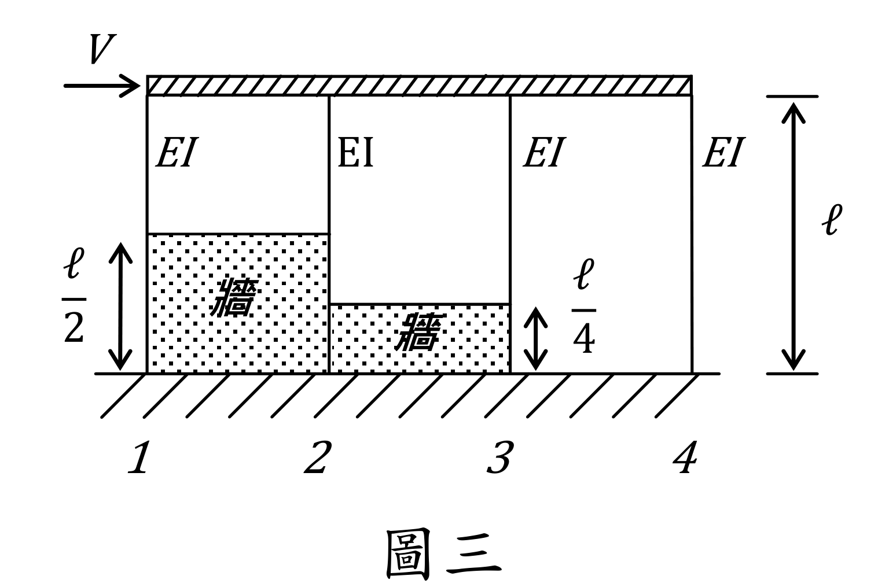
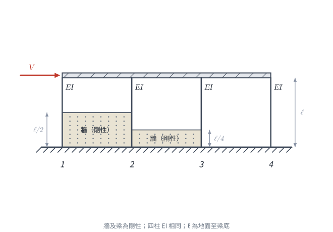
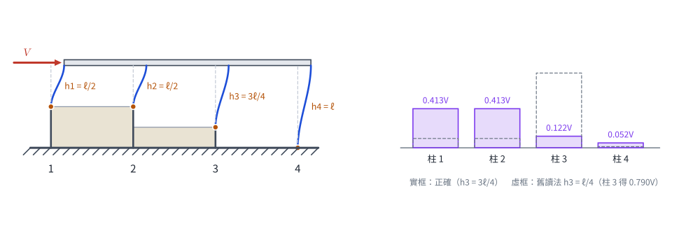

📄 題目正本：考卷原文・附圖・判讀清單（已確認）
SD-2017-3 題目正本
本檔只記錄考卷上寫了什麼、圖上畫了什麼，不含任何解法。解析見同資料夾
SD-2017-3.md。
判讀清單經使用者確認前，狀態為「待確認」；確認後本檔原則上不再修改（改動須回考卷原圖並記 log）。
| 項目 | 內容 |
|---|---|
| 考卷 | raw/exams/SD-2017_結構動力分析與耐震設計.pdf，第 1 頁（正面），第三題（頁面下方） |
| 考年 | 2017（民國106年）專技高考結構工程技師「結構動力分析與耐震設計」 |
| 配分 | 25 分 |
| 附圖 | SD-2017-3-fig-1.png（舊擷取，柱編號 3 下方有游標）、SD-2017-3-fig-2.png（2026-11-16 由考卷 500 dpi 重擷取） |
| 判讀狀態 | 已確認（2026-11-16，使用者授權依 Claude 建議。原轉錄：2026-11-16 轉錄；PyMuPDF 110 dpi 整頁＋500 dpi 局部放大，PDF 文字層與向量座標核對；盲讀於開啟解析前完成） |
1. 考卷原文（逐字）
三、結構如圖三，令牆及梁為剛性（Rigid），試求編號 1、2、3、4 柱子所受的剪力。（25 分）
2. 考卷給的公式、附表與參數
- 考卷沒有給參考公式。
- 給定（圖上）：四根柱，皆標 $EI$；柱高（地面至剛性梁底）$\ell$；1–2 跨間有高 $\ell/2$ 的牆，2–3 跨間有高 $\ell/4$ 的牆，3–4 跨間無牆；頂部剛性梁受水平力 $V$ 向右。
- 考卷沒有給：柱距、牆厚、$E$、$I$ 數值；柱底支承形式只能由地面斜線判讀。
- 卷首注意事項：㈠可以使用電子計算器。㈡不必抄題，作答時請將試題題號及答案依照順序寫在試卷上，於本試題上作答者，不予計分。㈢本科目除專門名詞或數理公式外，應使用本國文字作答。考試時間：2 小時。
3. 附圖

證據圖 SD-2017-3-fig-2.png（500 dpi 重擷取；舊圖 SD-2017-3-fig-1.png 內容相同，柱編號 3 下方有游標）
圖面文字照錄：V、EI、EI、EI、EI、ℓ/2、牆、牆、ℓ/4、ℓ、1、2、3、4、圖三
4. 判讀清單
| # | 項目 | 判讀 | 圖上／題文依據 | 把握 |
|---|---|---|---|---|
| 1 | 柱 2 的有效（可變形）長度 | 柱 2 左側牆高 $\ell/2$、右側牆高 $\ell/4$，兩牆皆與柱 2 相接；剛性牆把柱束制到較高牆頂 → 柱 2 可變形段為上方 $\ell/2$ | 500 dpi：$\ell/2$ 牆右緣與 $\ell/4$ 牆左緣都在柱 2 線上（x≈568 px） | 確定（解讀） |
| 2 | 各柱可變形段長度 | 柱 1：$\ell/2$（牆頂至梁底）；柱 2：$\ell/2$；柱 3：$3\ell/4$；柱 4：$\ell$ | 500 dpi 像素：梁底 y=165、地面 645（480 px＝$\ell$）；牆頂 405（240 px＝$\ell/2$）、525（120 px＝$\ell/4$） | 確定（解讀） |
| 3 | 柱端條件 | 柱頂與剛性梁剛接、可變形段下端在剛性牆頂（或地面固定）視為固定 → 兩端固定、只平移 | 題文「牆及梁為剛性」；柱底斜線地面 | 確定（解讀） |
| 4 | 牆是否承受 $V$ | 牆不到梁底、與梁不接觸，只束制柱；$V$ 全部由四根柱的上段承受 | 圖上牆頂與梁之間留空 | 確定（解讀） |
| 5 | 柱斷面 | 四柱 $EI$ 相同（第 2 柱標「EI」字體為正體，視為同一記號） | 圖面文字 | 確定（解讀） |
| 6 | 柱高 $\ell$ | 自地面量至剛性梁底面 | 500 dpi：尺寸線上端對齊梁下緣 | 確定 |
| 7 | 側力 | $V$ 水平向右，作用於梁高度 | 圖上箭頭 | 確定 |
| 8 | 所求 | 柱 1、2、3、4 各自的剪力（以 $V$ 表示） | 題文 | 確定 |
| 9 | 考卷沒有給 | 柱距、軸向變形、牆厚 | 題文 | 確定 |
轉錄：2026-11-16（SD-U3-1 題目正本推廣・組 U3-1-G1）
確認：2026-11-16 使用者授權依 Claude 建議確認（SD-U3-1 題目正本推廣・組 U3-1-G1，關卡一）
考題編號：SD-2017-3
主分類： SD-U3-1 結構耐震設計（含RC結構與鋼結構）
副分類： （無）
分析方法： 概念題（含計算）
標籤： 剛性梁 剛性牆 短柱效應 有效柱高 剛度分配 水平剪力 固定固定柱 側移剛度
1. 題目（考卷原文見題目正本）
考卷原文、公式／附表、附圖與判讀清單（已確認）見
SD-2017-3-problem.md。本節只列解題時最容易讀錯的地方與本解使用的記號；題意以題目正本為準。

重繪自考卷附圖，依題目正本判讀清單；本圖攔下的判讀錯誤：柱 3 旁的牆高 ℓ/4，柱 3 可變形段是 3ℓ/4（本庫舊解讀成 ℓ/4）；柱 2 兩側牆取較高的 ℓ/2。
常見誤讀
| 項目 | 正確判讀 | 常見誤讀 |
|---|---|---|
| 柱 3 可變形長度 | $3\ell/4$：柱 3 左側牆高 $\ell/4$，牆頂以上至梁底 $3\ell/4$（判讀 #2） | $\ell/4$（2026-11-16 前本庫舊解的讀法，把牆高當柱淨高，得 $V_3=64/81\,V$） |
| 柱 2 可變形長度 | $\ell/2$：兩側牆分別高 $\ell/2$、$\ell/4$，取較高者束制（判讀 #1） | $3\ell/4$ |
| 柱 1、柱 4 | $\ell/2$、$\ell$（判讀 #2） | — |
| 柱端條件 | 兩端固定、只平移（剛性梁＋剛性牆／地面）（判讀 #3） | 柱頂鉸接 |
本解記號： $h_i$ 為第 $i$ 柱可變形段長度；$k_i=12EI/h_i^3$；$V_i$ 為柱剪力。
2. 考題核心精神與出題者意圖 (Core Concepts & Examiner's Intent)
核心觀念
- 短柱效應（Short Column Effect）： 剛性牆把柱的可變形段縮短，柱側移勁度隨高度三次方放大（$k \propto 1/h^3$），因此吸走較大比例的側向剪力
- 剛度分配法： 剛性頂梁使各柱頂有相同側移 $\Delta$，各柱剪力按側移勁度比例分配
- 兩端固定柱側移勁度： $k = 12EI/h^3$
- 可變形段要量到哪裡： 尺寸 $\ell/2$、$\ell/4$ 標的是牆高；柱的可變形段是牆頂到梁底，即 $\ell-$牆高；同一根柱兩側牆高不同時，由較高的牆束制
出題者意圖
- 測驗考生能否從圖上正確讀出各柱可變形段（柱 1、2 為 $\ell/2$，柱 3 為 $3\ell/4$，柱 4 為 $\ell$）
- 測驗剛度分配法的應用（剛性梁前提下）
- 隱含考點：被矮牆夾住的柱（本題柱 1、2）變成短柱，吸收大部分剪力，地震時易剪力脆性破壞
3. 解題戰略地圖與陷阱分析 (Strategic Roadmap & Trap Analysis)
步驟作戰計畫
Step 1: 判斷各柱可變形段長度（牆頂至梁底；兩側牆取較高者）
Step 2: 計算各柱側移勁度 k_i = 12EI/h_i³
Step 3: 計算總勁度 K = Σk_i
Step 4: 各柱剪力 V_i = (k_i/K)×V
Step 5: 驗算 ΣV_i = V
關鍵陷阱
| # | 陷阱 | 錯誤做法 | 正確做法 |
|---|---|---|---|
| 1 | 把牆高當成柱可變形段 | 柱 3 旁牆高 $\ell/4$，就取 $h_3=\ell/4$ | $h_3=\ell-\ell/4=3\ell/4$；同理柱 1 為 $\ell-\ell/2=\ell/2$ |
| 2 | 柱 2 兩側牆高不同 | 取較矮的 $\ell/4$ 牆，$h_2=3\ell/4$ | 剛性牆把柱束制到較高的牆頂，$h_2=\ell/2$ |
| 3 | 忽略短柱效應 | 用全高 $\ell$ 計算所有柱的勁度 | 依圖三判斷各柱可變形段（$\ell/2$、$\ell/2$、$3\ell/4$、$\ell$） |
| 4 | 邊界條件錯誤 | 用固定端–自由端公式 $k=3EI/h^3$ | 剛性頂梁 → 柱頂不轉動，用 $k=12EI/h^3$ |
| 5 | 忘記三次方 | $k_1=12EI/(\ell/2)=24EI/\ell$ | $k_1=12EI/(\ell/2)^3=96EI/\ell^3$ |
3.5 變數層次分析 (Variable Hierarchy Analysis)
複習提示：第一次解題後，在每個卡住的知識點旁標記
⚠；第二次複習時只看有⚠的項目。
最終目標
求各柱剪力 V₁、V₂、V₃、V₄（以 V 表示）
本題關鍵公式（依計算順序）
$\boxed{\cdot}$ = 由前步驟推導出的中間變數
$$\text{Step 1: 各柱側移勁度（兩端固定）}$$
$$k_i = \frac{12EI}{h_i^3}$$
$$\text{Step 2: 各柱具體勁度}$$
$$k_1 = k_2 = \frac{12EI}{(\ell/2)^3} = \frac{96EI}{\ell^3}, \quad k_3 = \frac{12EI}{(3\ell/4)^3} = \frac{256EI}{9\ell^3}, \quad k_4 = \frac{12EI}{\ell^3}$$
$$\text{Step 3: 總勁度}$$
$$K = k_1+k_2+k_3+k_4 = \frac{EI}{\ell^3}\left(96+96+\frac{256}{9}+12\right) = \frac{2092\,EI}{9\,\ell^3}$$
$$\text{Step 4: 各柱剪力（勁度分配）}$$
$$V_i = \frac{\boxed{k_i}}{\boxed{K}}\cdot V$$
L1：題目直接給定
| 符號 | 數值 | 說明 |
|---|---|---|
| $V$ | 已知 | 水平施力 |
| $EI$ | 已知（4 柱相同） | 各柱抗彎勁度 |
| 牆高 | 1–2 間 $\ell/2$；2–3 間 $\ell/4$；3–4 間無牆 | 圖三尺寸（題目正本判讀 #2） |
| $\ell$ | 已知 | 地面至梁底 |
L2：需知識點推導
Step 1：各柱可變形段與側移勁度
| 符號 | 公式/來源 | 卡關? |
|---|---|---|
| $h_1$ | $\ell-\ell/2=\ell/2$（左側牆高 $\ell/2$） | |
| $h_2$ | $\ell/2$（兩側牆高 $\ell/2$、$\ell/4$，取較高者） | |
| $h_3$ | $\ell-\ell/4=3\ell/4$（左側牆高 $\ell/4$） | |
| $h_4$ | $\ell$（無牆） | |
| $k_1=k_2$ | $12EI/(\ell/2)^3 = 96EI/\ell^3$ | |
| $k_3$ | $12EI/(3\ell/4)^3 = 12\times\frac{64}{27}\,EI/\ell^3 = 28.44EI/\ell^3$ | |
| $k_4$ | $12EI/\ell^3$ |
Step 2：勁度分配
| 符號 | 公式/來源 | 卡關? |
|---|---|---|
| $K_{total}$ | $\sum k_i = 2092EI/(9\ell^3) = 232.44EI/\ell^3$ | |
| $V_i$ | $(k_i/K_{total})\times V$；勁度比 $1/h^3$ ＝ $8:8:\frac{64}{27}:1$ ＝ $216:216:64:27$ |
L3：深層知識（不懂就卡住）
| 知識點 | 說明 | 卡關? |
|---|---|---|
| 兩端固定柱側移勁度公式 | $k=12EI/h^3$（固定固定）vs. $k=3EI/h^3$（固定自由）；差 4 倍 | |
| 高度三次方的放大效應 | $h$ 減半 → $k$ 增加 $2^3=8$ 倍；$h$ 為 $3/4$ → $k$ 增加 $(4/3)^3=2.37$ 倍 | |
| 剛性牆的束制 | 牆頂以下柱不能變形；柱兩側牆高不同時，較高的牆決定可變形段 | |
| 剛性梁的意義 | 各柱頂有相同水平位移 $\Delta$，故剪力可按勁度比例分配 | |
| 短柱效應的耐震意義 | 短柱吸收過大剪力，地震時易脆性破壞（剪力破壞先於撓曲破壞） |
4. 步驟化詳細計算過程 (Step-by-Step Detailed Calculation)
Step 1：確認各柱可變形段長度
依圖三（題目正本判讀 #1、#2）：
| 柱號 | 可變形段 $h_i$ | 說明 |
|---|---|---|
| 柱 1 | $\ell/2$ | 右側牆高 $\ell/2$，牆頂至梁底 $\ell-\ell/2=\ell/2$ |
| 柱 2 | $\ell/2$ | 左側牆高 $\ell/2$、右側牆高 $\ell/4$，由較高的牆束制，$\ell/2$ |
| 柱 3 | $3\ell/4$ | 左側牆高 $\ell/4$、右側無牆，$\ell-\ell/4=3\ell/4$ |
| 柱 4 | $\ell$ | 無牆，全高 |
邊界條件：
- 剛性頂梁 → 柱頂不轉動
- 剛性牆頂或基礎 → 可變形段下端不轉動、不位移
- 各柱可變形段均為兩端固定（fixed-fixed）
Step 2：計算各柱側移勁度
$$k = \frac{12EI}{h^3}$$
$$k_1 = k_2 = \frac{12EI}{(\ell/2)^3} = \frac{96EI}{\ell^3}$$
$$k_3 = \frac{12EI}{(3\ell/4)^3} = \frac{12\times 64\,EI}{27\,\ell^3} = \frac{256EI}{9\ell^3} \approx \frac{28.44EI}{\ell^3}$$
$$k_4 = \frac{12EI}{\ell^3}$$
策略註解： 柱 1、2 只有 $\ell/2$ 可變形，勁度是柱 4 的 8 倍；柱 3 為 $3\ell/4$，勁度是柱 4 的 2.37 倍。剪力主要由柱 1、2 承擔。
Step 3：計算總勁度
$$K_{total} = \frac{EI}{\ell^3}\left(96 + 96 + 28.44 + 12\right) = \frac{2092}{9}\cdot\frac{EI}{\ell^3} \approx \frac{232.44\,EI}{\ell^3}$$
Step 4：剪力分配
$$V_i = \frac{k_i}{K_{total}}\cdot V$$
以 $1/h^3$ 比例（$\ell^3$ 為單位）：$8 : 8 : \frac{64}{27} : 1$，乘以 27 得 $216 : 216 : 64 : 27$，總和 523。
柱 1、柱 2：
$$V_1 = V_2 = \frac{216}{523}\,V \approx 0.413\,V$$
柱 3：
$$V_3 = \frac{64}{523}\,V \approx 0.122\,V$$
柱 4：
$$V_4 = \frac{27}{523}\,V \approx 0.052\,V$$
Step 5：驗算
$$V_1 + V_2 + V_3 + V_4 = \frac{216+216+64+27}{523}\,V = V \quad \checkmark$$
最終答案
$$\boxed{V_1 = V_2 = \frac{216}{523}V \approx 0.413V, \quad V_3 = \frac{64}{523}V \approx 0.122V, \quad V_4 = \frac{27}{523}V \approx 0.052V}$$

圖 3 各柱可變形段（牆頂至梁底）與剪力分配（數值由 V_i ∝ 1/h_i³ 算出）。本圖攔下的錯誤：把牆高 ℓ/4 當成柱 3 的淨高——柱 3 實為 3ℓ/4，短柱是被 ℓ/2 牆夾住的柱 1、2。
5. 關鍵爭議點與進階探討 (Critical Issues & Advanced Discussion)
5.1 短柱效應的耐震危害
本題柱 1、2 被 $\ell/2$ 高的牆夾住，兩柱合計承受 $432/523 \approx 83\%$ 的剪力；柱 4（無牆）僅 $5.2\%$。柱 3 旁的牆只有 $\ell/4$，可變形段 $3\ell/4$，只分到 $12.2\%$。
這正是「短柱效應」造成耐震危害的根源：
- 剛性牆（如磚牆）若僅填充部分高度，會造成相鄰柱的可變形段大幅縮短
- 短柱因承受過大剪力，在地震時容易發生剪力脆性破壞（而非延性撓曲破壞）
- 此為台灣地震後常見的典型破壞模式
讀圖提醒（本庫舊解錯誤）： 2026-11-16 前的舊解把柱 3 的可變形段讀成 $\ell/4$（把牆高當柱淨高），得 $V_1=V_2=8/81\,V$、$V_3=64/81\,V$、$V_4=1/81\,V$，柱 3 剪力被高估約 6.5 倍、柱 1、2 被低估約 4 倍，結論（短柱是柱 3）也相反。
5.2 邊界條件的影響
若柱頂可轉動（例如頂梁並非剛性、改用固定–自由的 $k=3EI/h^3$），各柱勁度仍與 $1/h^3$ 成正比，比值 $216:216:64:27$ 不變，剪力分配結果不變。
但本題題目明確指出梁為剛性，故使用 $12EI/h^3$（固定–固定）。
5.3 實務建議：避免短柱設計
填充牆與柱若未隔開，設計時應考慮牆造成的短柱效應（柱剪力增大），並加強柱的圍束箍筋，以防止地震中發生脆性剪力破壞；具體條文依現行建築物耐震設計規範與混凝土結構設計規範（條文待核）。
修正日期：2026-11-16（§1 改為指向題目正本，重繪附圖 figs/SD-2017-3-fig-1-problem.svg）
修正日期：2026-11-16（勘誤：柱 3 可變形段由 ℓ/4 改為 3ℓ/4（舊解把牆高當柱淨高），各柱剪力由 8/81、8/81、64/81、1/81 V 改為 216/523、216/523、64/523、27/523 V；§2–§5 全部改寫；標頭主分類改為 SD-U3-1、無副分類（同索引）；驗證：scripts/fixes/2026-11-16_verify_SD-2017-3.py 分數精確重算＋勁度法凝縮交叉驗算，MISMATCHES: 0）
修正日期：2026-11-16（非勘誤）圖解補繪：figs/SD-2017-3-fig-3-shear.svg（可變形段＋剪力分配，§4）